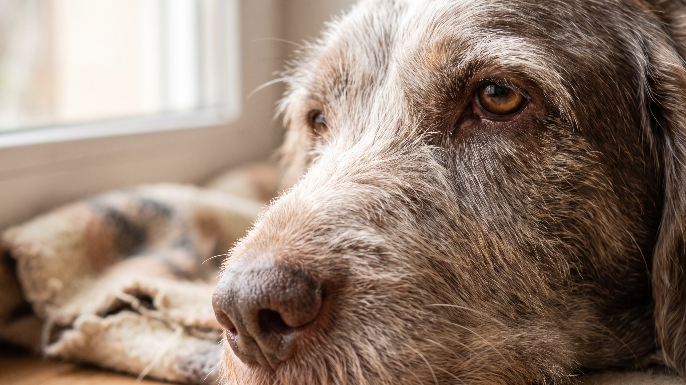

Пока другие легавые носятся по полю за командой, спиноне итальяно идёт своим темпом: методично, носом в землю, с видом человека, у которого всё под контролем. Эта порода не взрывная: она работает медленно, но неустанно, и та же черта проявляется дома. Если хотите быстрого и послушного спортсмена, спиноне вас разочарует. Если хотите верного, тёплого «прилипалу» с рабочим нюхом и честным взглядом, читайте дальше.
🐾 Ваш питомец — спиноне итальяно?
Заведите профиль в AnimaLife: приложение запомнит породу, возраст и вес и будет подсказывать по уходу именно для неё. Вопросы AI-ветеринару — круглосуточно и бесплатно.
Завести профиль → Завести в MAX →
У вас iPhone? AnimaLife есть в App Store
Спиноне итальяно называют «добрым великаном» среди легавых. По темпераменту порода разительно отличается от курцхаара или виймарнера: нет той взрывной энергии и постоянной готовности к рывку. Спиноне спокойнее, привязчивее, заметно «человекоориентирован».
Спиноне создавался для охоты в труднопроходимой итальянской местности: болота, кустарник, камни. У него выносливость тяжеловеса, а нос работает часами без перебоя. Физическая нагрузка нужна ежедневно: минимум 1,5 часа, и собаке важно понюхать мир, а пробежать дистанцию по асфальту ей недостаточно.
Прогулка по одному и тому же маршруту на поводке не насытит спиноне. Дайте ему время от времени нюхать траву, кусты, землю. Занятия ноузворком (поиск предметов по запаху) или трекинг по незнакомым тропам снимают напряжение лучше, чем двойная доза бега.
Жёсткая двойная шерсть спиноне итальяно не стрижётся машинкой. Правильный уход: тримминг (выщипывание отмершей шерсти пальцами или тримминговым ножом). Стрижка делает шерсть мягкой и рыхлой, теряется структура, которая защищает от влаги и грязи.
Спиноне хорошо вписывается в семью с детьми школьного возраста и загородным участком. Квартира возможна, если есть ежедневные длинные прогулки и хозяева дома большую часть дня. Одинокие люди, которые проводят 10 часов на работе, рискуют получить тревожную, деструктивную собаку.
Три ошибки, которые делают почти все:
🐾 У вас спиноне итальяно?
AnimaLife соберёт уход под породу: к каким болезням есть склонность, что проверять по возрасту, чем кормить и когда пора к врачу. Бесплатно, прямо в мессенджере.
Собрать план ухода → Собрать в MAX →
У вас iPhone? AnimaLife есть в App Store
🐾 Понравился разбор?
Подпишитесь на канал — каждый день разбираем по одному тревожному симптому у кошек и собак: что в пределах нормы, а когда пора к врачу. Подпишитесь, чтобы не пропустить разбор, который может спасти здоровье вашего питомца.
Материал носит информационный характер и не заменяет очную консультацию ветеринара.